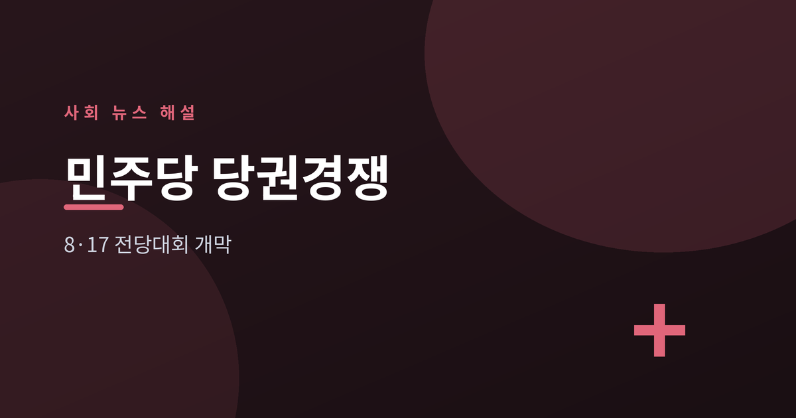
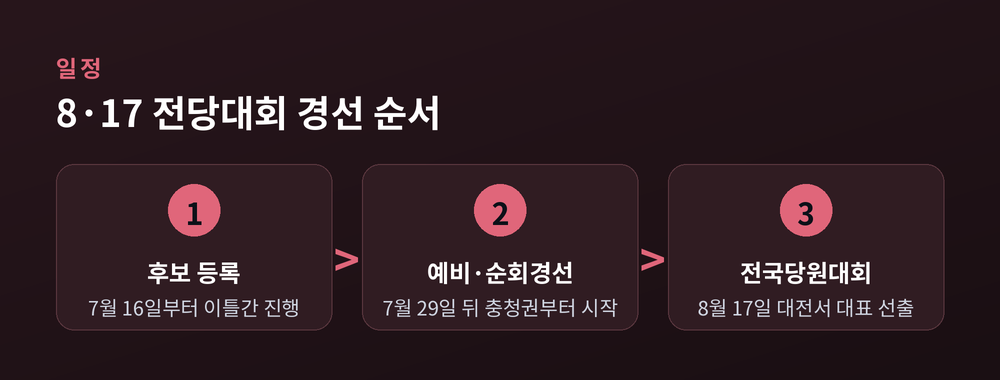
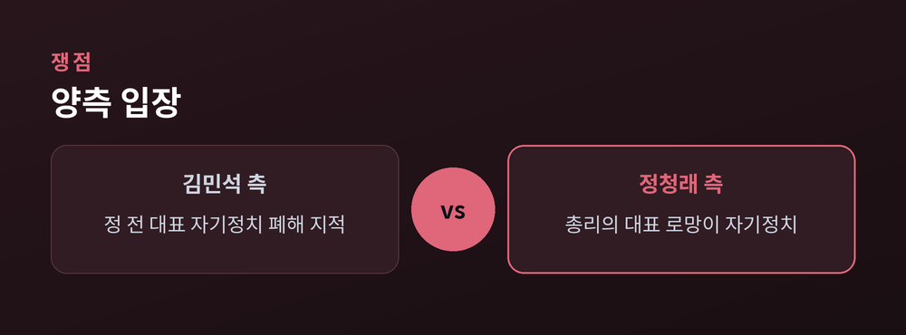
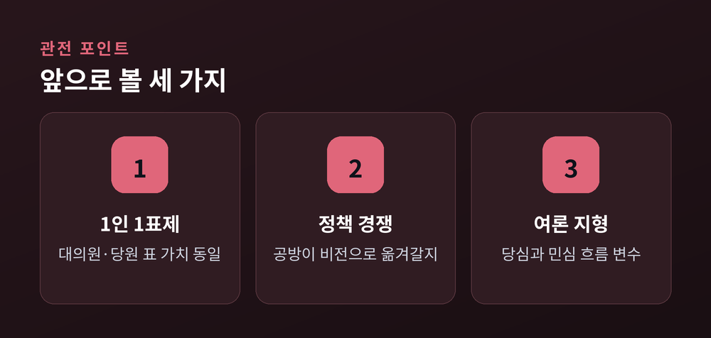

김민석·정청래 '자기정치' 공방

이번 글에서는 더불어민주당 8·17 전당대회 당대표 경선 초반 구도를 정리해 보겠습니다. 무슨 일이 벌어졌는지, 왜 관심이 쏠리는지, 앞으로 무엇을 지켜봐야 하는지를 순서대로 짚습니다. 특정 후보를 편들지 않고, 각 측 입장을 균형 있게 전하는 데 초점을 두었습니다.
더불어민주당은 8월 17일 대전컨벤션센터에서 전국당원대회를 열어 새 지도부를 선출합니다. 당대표·최고위원 후보 등록은 7월 16일부터 이틀간 진행되고, 예비경선은 7월 29일, 순회경선은 8월 1일 충청권을 시작으로 이어집니다.
가장 먼저 출사표를 던진 사람은 김민석 전 국무총리입니다. 그는 7월 6일 광주에서 당대표 선거 출마를 공식 선언했습니다. 정청래 전 대표는 연임에 도전하고, 송영길 전 대표도 출마 채비에 나선 것으로 전해집니다. 초반부터 세 후보 구도가 잡히는 모양새입니다.

경선 초반의 열쇳말은 '자기 정치'였습니다. 김민석 전 총리는 출마 첫날 정청래 전 대표를 겨냥해 '자기정치 폐해'라는 표현을 썼습니다. 합당·검찰개혁 논의, 공천 과정 등에서 그런 문제가 드러났다는 취지였습니다.
정청래 전 대표는 곧바로 반박했습니다. 그는 "국정에 전념해야 할 총리의 '당대표 로망' 발언이 오히려 자기 정치"라고 되받았습니다. 한쪽이 지적하면 다른 쪽이 재반박하는 공방이 며칠간 이어졌습니다.

곁가지 쟁점도 불거졌습니다. 친정청래계로 분류되는 인사들은 김 전 총리의 과거 계엄 해제 표결 불참 문제를 거론하며 역공에 나섰습니다. 이에 대해 김 전 총리 측은 당원이 평가할 몫이라는 취지로 대응했습니다. 각 측 주장은 아직 검증과 판단이 진행 중인 사안인 만큼, 어느 쪽이 옳다고 단정하기는 이릅니다.
| 구분 | 주요 내용 |
|---|---|
| 전당대회 | 8월 17일, 대전컨벤션센터 |
| 후보 등록 | 7월 16~17일 |
| 예비경선 / 순회경선 | 7월 29일 / 8월 1일부터 |
| 주요 거론 후보 | 김민석·정청래·송영길 |
| 초반 쟁점 | '자기 정치' 공방, 계엄 표결 논란 |
"당원이 평가할 시간이다." — 김민석 전 국무총리 (2026년 7월 언론 보도 인용)
첫째, 이번 전당대회에는 '1인 1표제'가 도입돼 대의원과 권리당원 표의 가치가 동일하게 적용됩니다. 표 계산 방식이 달라진 만큼 판세에 어떤 영향을 줄지가 변수입니다.
둘째, 초반 '자기 정치' 공방이 정책·비전 경쟁으로 옮겨갈지, 아니면 인물 대결로 굳어질지입니다. 예비경선과 순회경선을 거치며 각 후보가 내놓을 당 운영 구상이 실제 판단 재료가 될 것입니다.
셋째, 여론 지형입니다. 한 조사에서는 당심과 민심의 선호가 엇갈리는 흐름도 관측됐습니다. 다만 여론조사는 시점과 방식에 따라 달라지므로, 특정 수치를 결론으로 받아들이기보다 흐름의 참고선으로 보는 편이 안전합니다.

정리하면 이렇습니다. 지금은 구도가 막 짜인 초반이고, 승부의 무게추는 아직 어느 쪽으로도 기울지 않았습니다. 8월 17일까지의 경선 과정을 차분히 지켜보시길 권합니다.